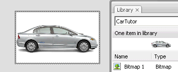

Flash позволяет организовать сложную анимацию при помощи иерархии объектов. Применим эту возможность для создания анимации машины с вращающимися колёсами.
Небольшой ликбез о фрагменте ролика.
Созданную во Flash анимацию и графику можно сохранить в Библиотеку, чтобы затем многократно использовать. Объект в библиотеке называется символом. Если скопировать символ на рабочую область (например, простым перетаскиванием), он становится экземпляром символа. Изменения символа будут влиять на все экземпляры.
Символы бывают трех типов - графика, кнопка и фрагмент ролика.
Графика - используется для статических векторных изображений и анимации, которые привязаны к временной линии сцены.
Кнопка - реагирует на движение и нажатие мыши, изменяя своё состояние.
Фрагмент ролика (Movie Clip) - анимация с собственной независимой временной шкалой. Они могут содержать интерактивные элементы и управляться с помощью ActionScript. Экземпляр фрагмента ролика может также быть вложен в другой символ.
Если фрагмент ролика вложен в другой фрагмент ролика или в документ, то он становится его потомком, а тот – его родителем. Между вложенными фрагментами ролика возникает иерархическая связь: изменения в родителе воздействуют на его потомков(положение, поворот, размер и т.п.) "Обзор ролика"(Movie Explorer + ) позволяет просмотреть иерархию вложенных фрагментов роликов в документе.
Вначале нарисуем или импортируем изображение автомобиля.
Конвертируем его в фрагмент ролика().
Двойным кликом входим в режим редактирования этого символа.
Здесь есть своя временная шкала.
Рисуем или импортируем изображение колеса.
Это колесо можно либо анимировать на временной линии автомобиля на отдельном слое, либо единожды создать анимацию вращения колеса и дублировать экземпляр. Пойдем вторым путем. Колесо конвертируем в фрагмент ролика и внутри создаем анимацию вращения.
Двойным кликом на пустой области выходим из режима редактирования символа колеса и копируем его в нужное положение.
Теперь, перемещая или масштабируя экземпляр автомобиля, колеса будут следовать за "родителем".